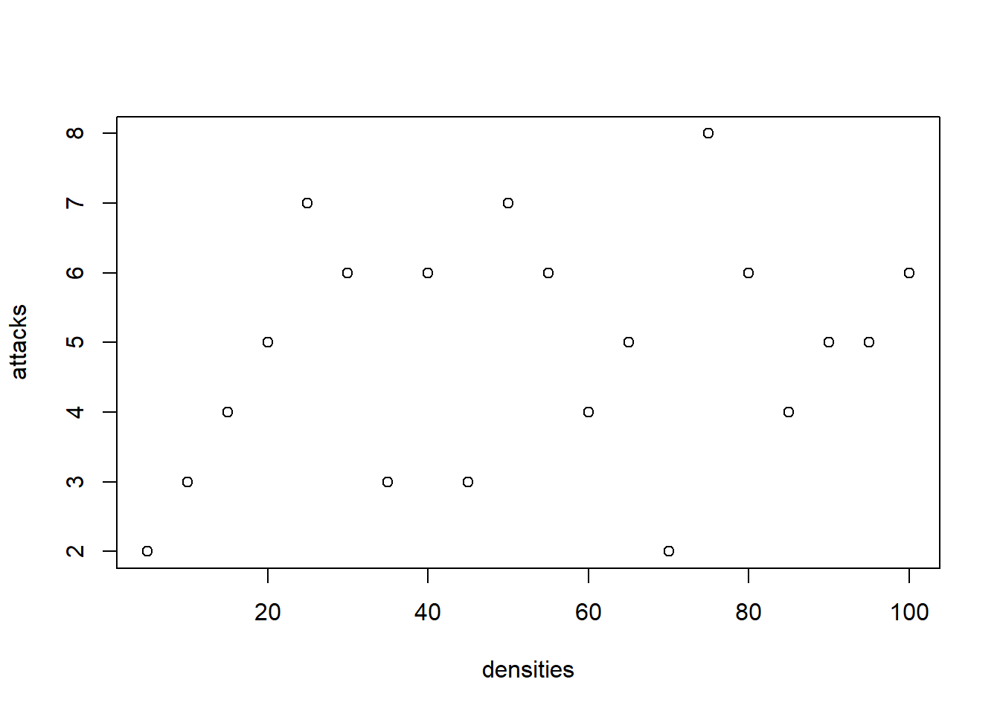

library(targets)
library(ggplot2)
library(tidyverse)
library(tidybayes)
library(cmdstanr)
library(stantargets)The equation
Predators eat prey. They eat prey faster when there is more prey – though they do have to slow down to catch, kill, and chew.1
If a predator can eat multiple things, then they might end up eating less of any one prey because they spread their kills around among all their prey. In the very simplest case, they do this in proportion to how frequent the different prey are – the predator has no preference, it just goes around randomly and eats what it finds
The classic OG version of this model comes from Holling (1966)
\[ A = \frac{\alpha N}{1 + h\alpha N} \tag{1}\]
where
- N is the number of prey
- \(\alpha\) is the attack rate
- \(h\) is the handling time
And altogether you get the number of attacks \(A\) on prey in some unit of time.
multiple species
Suppose you have more than one species in this system. You could then rewrite Equation 1 to allow multiple animals to be included in the predation:
\[ A_i = \frac{\alpha N_i}{1 + h\alpha \sum_{j = 1}^s N_j} \tag{2}\]
here \(\sum_{j = 1}^s N_j\) means the sum over the abundances of all the prey. The subscript \(i\) just means that we are talking about one particular prey, which we label \(i\). This prey is included in the summation in the denominator.
It’s common to consider that different prey species might be attacked or handled at different rates (Smith and Smith 2020) (Smout et al. 2010)
One species model
Let’s begin with the classic model and add complexity later.
I think it helps to think of predation as a binomial trial: out of so many prey individuals (\(N\)), some of them get attacked (\(A\)).
\[ \begin{align} A &\sim \text{Binomial}(p, N) \\ p &= \frac{\alpha}{1 + h\alpha N} \\ \alpha &\sim \text{Beta}(2, 4) \\ h &\sim \text{LogNormal}(0,1) \end{align} \] some things to note:
the \(N\) now appears in the Binomial distribution as a separate parameter, not in the expression for the probability of attack. Remember that the mean of a Binomial is \(pN\), so in this case we will come back to Equation 1
both the parameters have constraints: \(a\) cannot be outside of \([0,1]\), and \(h\) cannot be negative. We choose priors that respect these constraints!
Let’s translate this into Stan and take a look:
simple_type2 <- cmdstan_model(here::here("posts",
"2022-11-11-multispecies-functional-response",
"simple_type2.stan"))
simple_type2// simple predator-prey functional response for a binomial density
data {
int<lower=0> N;
array[N] int<lower=0> attacks;
array[N] int<lower=0> densities;
}
parameters {
real<lower=0,upper=1> a;
real<lower=0> h;
}
transformed parameters{
vector<lower=0, upper = 1>[N] prob_attack;
prob_attack = a * inv(1 + a * h * to_vector(densities));
}
model {
a ~ beta(2,6);
h ~ lognormal(0, 1);
attacks ~ binomial(densities, prob_attack);
}the code above is mostly a direct translation of the equations. One technique is worth noting: the types of the input vectors. Binomial distributions deal in integers, and so we define densities and attacks as integers. However, in order to vectorize our calculations, we massage the input data from an array of integers to a vector of real numbers using to_vector. This highlights an important difference between R and Stan. Stan requires careful definition of the types of data, where R is much more informal.
simulate from a model:
generate_one_spp_type_2 <- function(){
true_a <- stats::rbeta(n = 1, 8, 4)
true_h <- stats::rlnorm(n = 1, -2, .5)
densities <- seq(from = 5, to = 100, by =5)
prob <- true_a/(1 + true_a * true_h * densities)
attacks <- rbinom(n = length(densities), size = densities, prob = prob)
list(true_a = true_a,
true_h = true_h,
densities = densities,
attacks = attacks,
prob = prob)
}
one_spp_sim <- generate_one_spp_type_2()
one_spp_sim$true_a
[1] 0.7568304
$true_h
[1] 0.1605559
$densities
[1] 5 10 15 20 25 30 35 40 45 50 55 60 65 70 75 80 85 90 95
[20] 100
$attacks
[1] 2 3 4 5 7 6 3 6 3 7 6 4 5 2 8 6 4 5 5 6
$prob
[1] 0.47079213 0.34166316 0.26812246 0.22063275 0.18743446 0.16292010
[7] 0.14407649 0.12913995 0.11700947 0.10696221 0.09850396 0.09128539
[13] 0.08505256 0.07961647 0.07483352 0.07059268 0.06680672 0.06340618
[19] 0.06033505 0.05754769with(one_spp_sim, rbinom(n = length(densities), size = densities, prob = prob)) [1] 4 5 3 3 8 3 5 5 4 8 7 7 5 3 7 2 5 7 3 6with(one_spp_sim, plot(densities, prob*densities))
with(one_spp_sim, plot(densities, attacks))
try it in targets:
tar_option_set(packages = c("cmdstanr",
"ggplot2", "tidybayes",
"stantargets"))
generate_one_spp_type_too <- function(){
true_a <- stats::rbeta(n = 1, 8, 4)
true_h <- stats::rlnorm(n = 1, -2, .5)
densities <- seq(from = 5, to = 100, by =5)
prob <- true_a/(1 + true_a * true_h * densities)
attacks <- rbinom(n = length(densities), size = densities, prob = prob)
list(
N = length(attacks),
true_a = true_a,
true_h = true_h,
densities = densities,
attacks = attacks,
prob = prob
)
}Establish _targets.R and _targets_r/globals/some-globals.R.list(
stantargets::tar_stan_mcmc(name = one_spp,
stan_files = "simple_type2.stan",
data = generate_one_spp_type_too(),
stdout = R.utils::nullfile(),
stderr = R.utils::nullfile()
)
)Establish _targets.R and _targets_r/targets/run_one_model.R.tar_visnetwork()tar_make()✔ skip target one_spp_data
✔ skip target one_spp_file_simple_type2
✔ skip target one_spp_mcmc_simple_type2
✔ skip target one_spp_diagnostics_simple_type2
✔ skip target one_spp_summary_simple_type2
✔ skip target one_spp_draws_simple_type2
✔ skip pipeline [0.17 seconds]References
Holling, C. S. 1966. “The Functional Response of Invertebrate Predators to Prey Density.” Memoirs of the Entomological Society of Canada 98 (S48): 5–86. https://doi.org/10.4039/entm9848fv.
Smith, Brian E., and Laurel A. Smith. 2020. “Multispecies Functional Responses Reveal Reduced Predation at High Prey Densities and Varied Responses Among and Within Trophic Groups.” Fish and Fisheries 21 (5): 891–905. https://doi.org/10.1111/faf.12468.
Smout, Sophie, Christian Asseburg, Jason Matthiopoulos, Carmen Fernández, Stephen Redpath, Simon Thirgood, and John Harwood. 2010. “The Functional Response of a Generalist Predator.” PLOS ONE 5 (5): e10761. https://doi.org/10.1371/journal.pone.0010761.
Footnotes
Things that eat plants have to do the same; replace “kill” with “peel” etc.↩︎